Jei įveikėte visus 1-20 lygius ir laukiate, kol jūsų bendraklasiai pasivys jus, pažvelkite į šiuos iššūkius. Kai kurie iš jų pareikalaus, kad prieš pradėdami programuoti, nemažai pagalvotumėte! Tikriausiai bus naudinga juos apgalvoti prieš bandant programuoti sprendimą kompiuteriu.
Robotukas jau išmoko vaikščioti aplink ežerą. Šį kartą jis nusprendė kelionėje padaryti kažką naudingo - surinkti obuolius ir iškepti pyragą. Padėkite Robotukui surinkti obuolius!
Atidarykite Paprasta kaip iškepti pyragą? pasaulį ir pateikite savo sprendimą!
Pasaulis pradžioje atrodys maždaug taip:
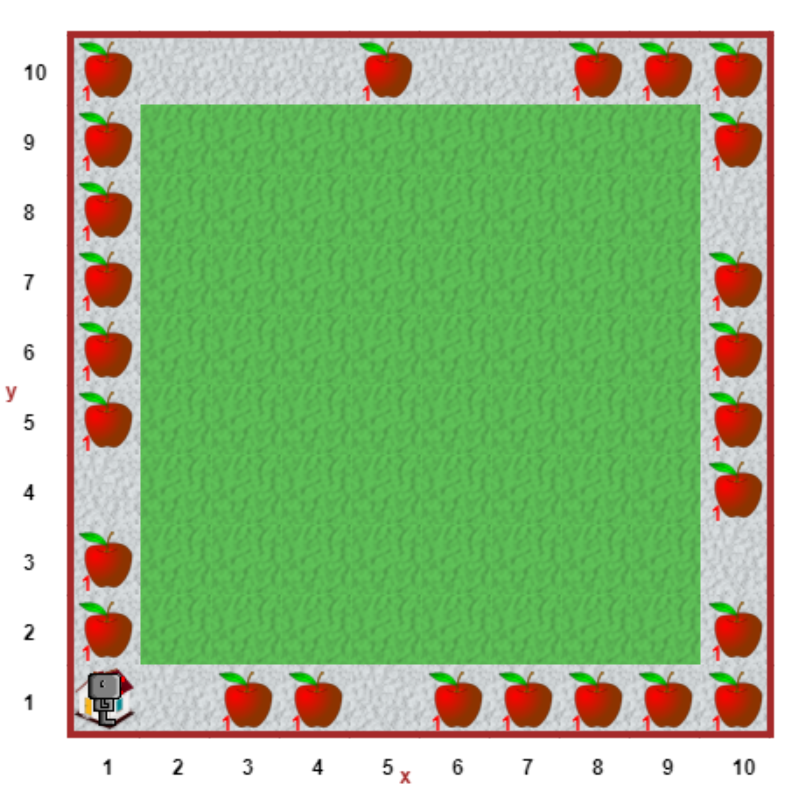Robotukas mėgsta konstruoti - šiandien jis gamina žvaigždių bokštus. Jis turi daug žvaigždžių detalių ir nori pasigaminti 3 žvaigždžių aukščio bokštus. Parašykite programą, kuri sukurtų Žvaigždžių bokštą Robotuko pradinėje padėtyje, o po to - visuose nelyginiuose stulpeliuose.
Atidarykite Žvaigždžių bokštai 1 pasaulį ir pateikite savo sprendimą!
Pasaulis pradžioje atrodys maždaug taip:
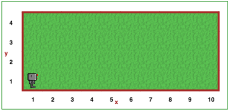Kai programa bus baigta, galutinis pasaulis turėtų atrodyti taip:
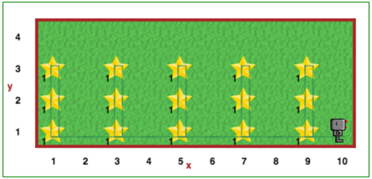Šį kartą Robotukas nori konstruoti žvaigždžių bokštus oloje. Olos lubose yra įvairaus ilgio stalaktitų. Robotukas nori pastatyti kuo aukštesnius bokštus, neatsitrenkdamas į lubas. Kaip ir praėjusį kartą, parašykite programą, kuri konstruotų žvaigždžių bokštus: pradžioje - Robotuko pradinėje padėtyje, o po to - nelyginiuose stulpeliuose. Statant bokštus palikite vieną tuščią langelį prie lubų.
Atidarykite Žvaigždžių bokštai 2 pasaulį ir pateikite savo sprendimą!
Pasaulis pradžioje atrodys maždaug taip:
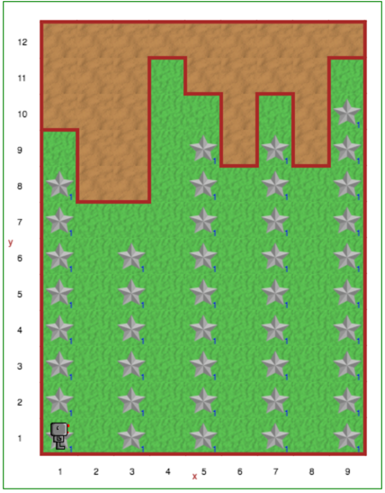Robotukas turi krūvą kvadratėlių kažkur priešais, bet nori daugiau! Tiksliau, du kartus daugiau. Robotukas turi daugybę kvadratėlių, kuriuos galite panaudoti norimai didesnei krūvelei padaryti. Padarykite kvadratėlių krūvelę, kurioje būtų lygiai du kartus daugiau kvadratėlių. Tam jums reikės įsiminti, kiek kvadratėlių buvo surinkta. Didesnę krūvą visada statykite vienu kvadratėliu į dešinę nuo pradinės krūvos vietos.
Atidarykite Dvigubinimo pasaulį ir pateikite savo sprendimą!
Pasaulis pradžioje atrodys maždaug taip:
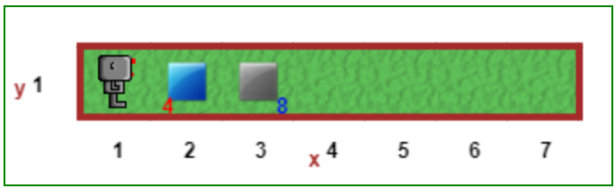Padėkite ženkliuką šio pasaulio geometriniame centre. Garantuojame, kad pasaulio plotis bus nelyginis skaičius, o aukštis - tik vienas vienetas. Savaime suprantama, tam kad surasti centrą, jums reikės surasti jo plotį.
Atidarykite pirmo pasaulio centro pasaulį ir pateikite savo sprendimą!
Pasaulis pradžioje atrodys maždaug taip:
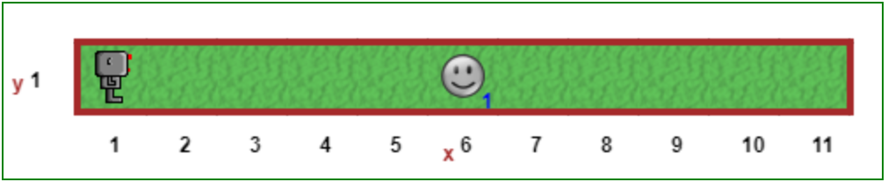Padėkite ženkliuką šio pasaulio geometriniame centre. Šį kartą pasaulio aukštis gali būti bet koks. Garantuojame, kad pasaulio plotis ir aukštis bus nelyginiai skaičiai. Savaime suprantama, tam kad surasti centrą, jums reikės surasti jo plotį ir aukštį.
Atidarykite antro pasaulio centro pasaulį ir pateikite savo sprendimą!
Pasaulis pradžioje atrodys maždaug taip:
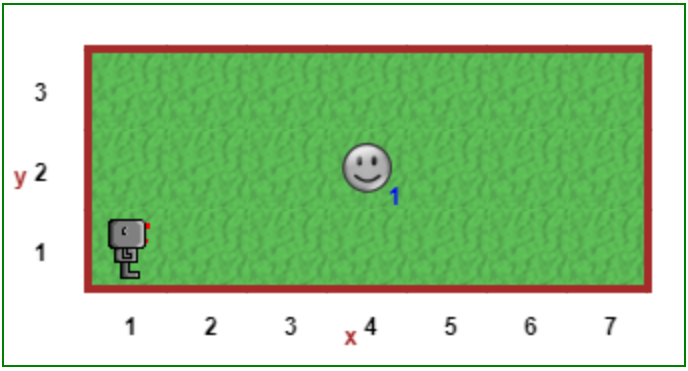Robotukas gali atsidurti bet kuriame pasaulio taške. Padėkite sugražinti Robotuką į kairį apatinį kampą (1, 1). Atkreipkite dėmesį, kad startavus programą, Robotukas gali būti pasuktas bet kuria kryptimi. Programą būtinai išsisaugokite arba jos funkcijas įsidėkite į biblioteką. Tai pravers kituose uždaviniuose.
Atidarykite grįžimo į pradžią pasaulį ir pateikite savo sprendimą!
Pasaulis pradžioje atrodys maždaug taip:
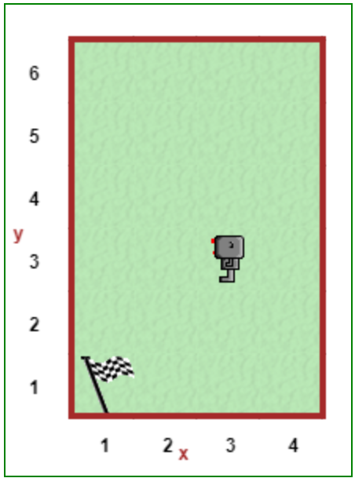Robotukas vėl šokinėja per kliūtis. Šį kartą kliūtys nebus nutolusios tuo pačiu atstumu viena nuo kitos. Be to, kliūtys gali būti skirtingo dydžio.
Atidarykite lenktynių su kliūtimis pasaulį ir pateikite savo sprendimą!
Pasaulis pradžioje atrodys maždaug taip:
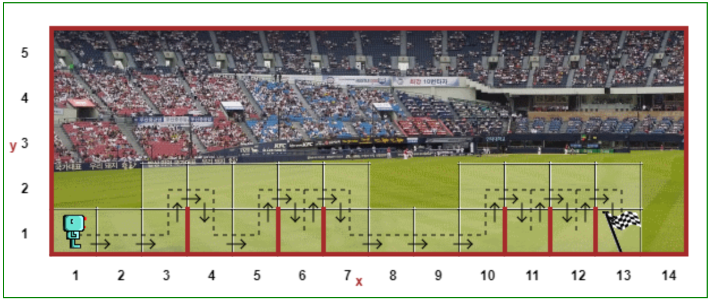Robotukas pasėjo keletą morkų sėklų. Kai kuriose vietose neišaugo nė viena morka; kitose vietose auga daug morkų. Tegul Robotukas pašalina morkų perteklių ir ten, kur jų nėra, pasodina naujų taip, kad kiekvienoje vietoje būtų tik po vieną morką. Robotukas jau turi pakankamai morkų (sėklų), kad prireikus galėtų persodinti visą sodą.
Atidarykite morkų sodinimo pasaulį ir pateikite savo sprendimą!
Pasaulis pradžioje atrodys maždaug taip:
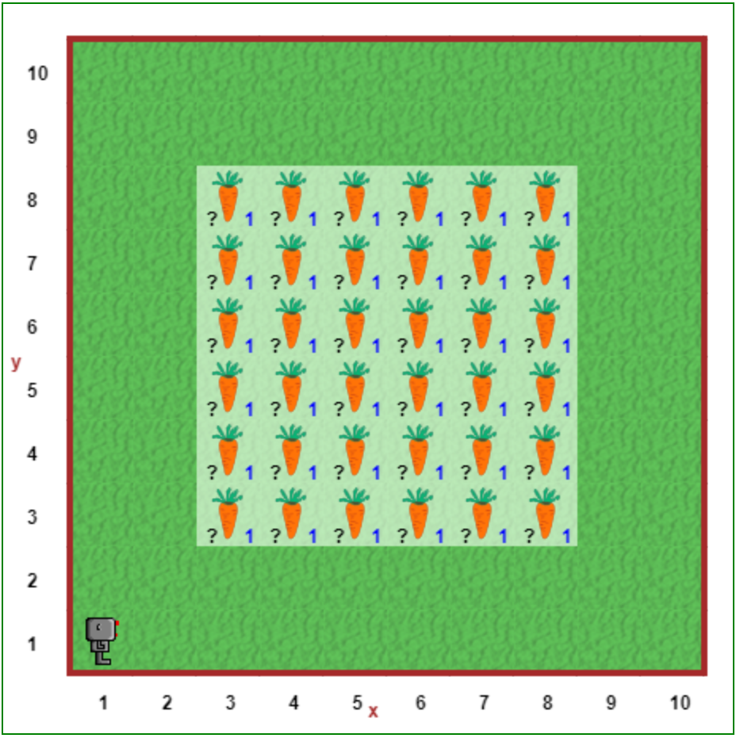Pasaulyje yra nišos išdėstytose abejose pusėse. Kai kuriose nišose yra ramunėlių. Liepkite Robotukui iš kiekvienos nišos, esančios kairėje pusėje, kurioje yra ramunių, perkelti jas į priešais esančią nišą dešinėje pusėje. Tam reikės organizuoti nišų apėjimą ir rastų ramunėlių pernešimą.
Atidarykite nišų pasaulį ir pateikite savo sprendimą!
Pasaulis pradžioje atrodys maždaug taip:
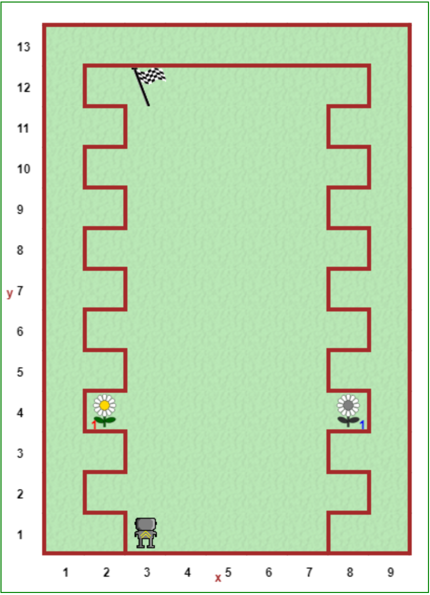Reeborgas mėgsta žygiuoti pėsčiomis po apylinkes, tačiau kartais lengva pasiklysti. Parašykite programą, kuri padėtų Reeborgui atidžiai sekti žygio taku ir galiausiai pasiekti žygio tako pabaigą.
Atidarykite linijos sekimo pasaulį ir įgyvendinkite savo sprendimą!
Pasaulis pradžioje atrodys maždaug taip:
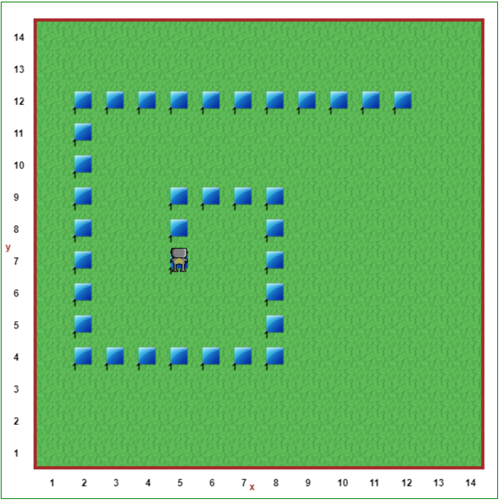Robotukas nusprendė praleisti dieną lavindamas šaudymo iš lanko įgūdžius. Kažkur pasaulyje yra trikampio formos objektas. Parašykite programą, kuri leistų Robotukui surasti šį objektą, o tada sukurtų visą pasaulį aprėpiantį ir į tą taikinį nukreiptą taikiklį.
Atidarykite Šaudymas į taikinius pasaulį ir pateikite savo sprendimą!
Pasaulis pradžioje atrodys maždaug taip:
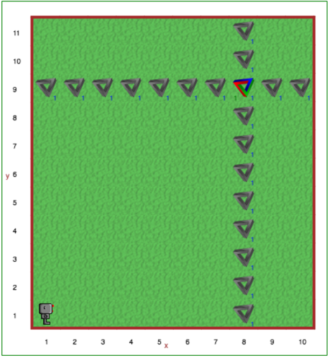